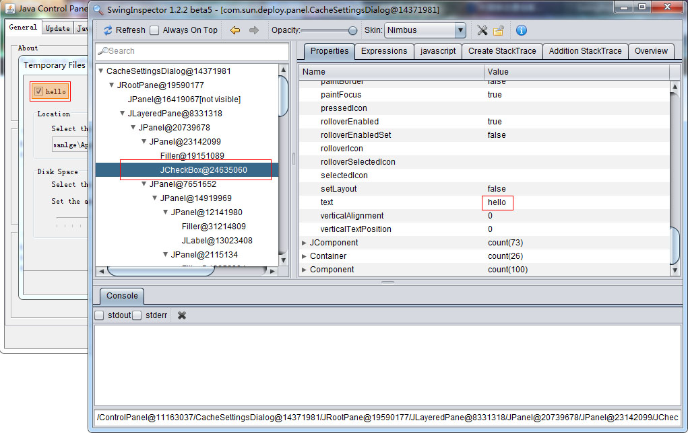

SwingInspector 1.2.3 for Windows / Mac OS X / Linux
The SwingInspector is a Java Swing/AWT user interface analysis and debugging tools. It likes firebug, Having powerful Swing/AWT user interface analysis and debugging functions. Applicable to all of Java Swing developers from beginner to advanced java swing can quickly locate the problem, UI rapid debugging, analysis of the realization of the principle of the software interface, able to bring development work efficiency increased dramatically.
Features of the instrument
- With the UI components linkage functions, user interface Ctrl + move the mouse, can be displayed in the the SwingInspector main interface corresponding to component information, and highlight the Component.
- Linkage to the user interface in SwingInspector component tree, that is, two-way linkage and does not need to provide the source code of the interface
- Applet support, you can locate the applet interface embedded into any web page.
- Powerful window capture function can capture the load agent jvm created all Swing/AWT window (applets in web pages, the browser loaded applet/webstart start the console window), modal dialog.
- Green, without having to install, simply add a line parameters to the java command to start the SwingInspector.
- Support the all AWT/Swing program, netbeans, visualvm.
- The powerful expression support, allows to support attribute browsing and editing of the selected group into the implementation of the expression computing, real-time display calculation results, the result of the operation.
- The powerful Javascript support functions, support javascript in real time to modify the user interface components take effect immediately after executing the script.
- The Component object creation record, tracking object creation process, and navigate directly to the line of code.
- Interfacial assembly record, support the assembly process of tracking user interface and navigate directly to the line of code.
- High performance, the core function using c/c++, and direct manipulation of the jvm, lazy mechanism has little effect on the performance of the main interface, visible only updated when the refresh components viewer.
- The property editor can directly modify the properties of selected components and the direct effect.
- You can record components stacktrace, when added to the parent can quickly navigate to the appropriate line of code.
- Simple, consistent shortcut key with commonly used software (F5 refresh, Alt + Left Back, Alt + Right forward, etc.), the interface is very simple and intuitive, no learning costs.
- Free, we aim to make a contribution for the development of the software industry.
Download
http://www.swinginspector.com/download/swing-inspector-windows-1.2.3.zip
http://www.swinginspector.com/download/swing-inspector-macosx-1.2.3.dmg
http://www.swinginspector.com/download/swing-inspector-linux-1.2.3.tar.gz
Snapshots


License
SwingInspector 1.2.3 start completely free, but prohibited any commercial behavior, without consent, to sell the software in any form is prohibited. The software is tied to the company's products for sale is prohibited.
SwingInspector composition
- agent swing-inspector-agent.dll, tools core part, the use of the C/C + + to write injected into the jvm process monitoring jvm various operations, collect relevant data, such as: jvm start/shut down the jvm method calls, the jvm memory allocations, high draw bright areas, jvm abnormal intercept global shortcut key bindings the, Add StackTrace record, object creation the StackTrace record SwingInspector interface communication and jni interface implementation.
- SwingInspector main interface, written in Java Swing analysis agent to collect the data, show a graphical interface: Component Tree provides Properties, Expressions, Javascript, and view interface shortcuts bind and invoke the completion of the agent in the jni related to the underlying operations.
The main functions are as follows:
1.Quickly locate interface elements (Ctrl + mouse movement)
2.real-time modify the component properties (the current version supports simple property, such as: character, numeric, boolean)

3.Modify components preferred size
4.Expression support
5. Powerful javascript support, real-time operating interface elements
6.Component object to create a record and code positioning function
7.Interfacial assembly information recording function
8.other features


Environmental requirements
- Operating system: windows xp, 2000, 2003, vista, win7, win8 from 1.2.3 started to support the installation of the operating system in the virtual machine (virtualbox, vmware).
- jvm: sun (oracle) java 1.6.x, 1.7.x, IBM jvm 1.6.x and 1.7.x,OpenJDK 16.x and 1.7.x, other manufacturers jvm not been tested.
Usage
1.command line
Windows(x64)
java -agentpath:C:\swing-inspector-windows-1.2.3\x64\swing-inspector-agent.dll -classpath xxx.jar xxx.xxx.Main(自己的入口类)
Windows(32bit)
java -agentpath:C:\swing-inspector-windows-1.2.3\Win32\swing-inspector-agent.dll -classpath xxx.jar xxx.xxx.Main
Mac OSX(64bit)
java -agentpath:/Volumes/SwingInspector_1.2.3/libswing-inspector-agent.dylib -classpath SwingSet2.jar SwingSet2
Linux(amd64)
java -agentpath:/home/manlge/swing-inspector_1.2.3/amd64/libswing-inspector-agent.so -classpath xxx.jar xxx.xxx.Main
Linux(32bit)
java -agentpath:/home/manlge/swing-inspector_1.2.3/i386/libswing-inspector-agent.so -classpath xxx.jar xxx.xxx.Main
example
Windows
java -agentpath:C:\SwingInspector\swing-inspector-agent.dll -classpath C:\SwingSet2.jar SwingSet2
Mac OSX
java -agentpath:/Volumes/SwingInspector_1.2.3/libswing-inspector-agent.dylib -classpath SwingSet2.jar SwingSet2
Linux
java -agentpath:/home/manlge/swing-inspector/amd64/libswing-inspector-agent.so -classpath SwingSet2.jar SwingSet2
2. Applet
3. Eclipse development swing application

4. Jvislualvm
jvisualvm.exe-J-agentpath: C:\swing-inspector-agent\x64\Release\swing-inspector-agent.dll
5. Netbeans
netbeans64.exe - locale en_US-J-agentpath: C:\swing-inspector-agent\x64\Release\swing-inspector-agent.dll

System shortcuts
- Ctrl + F12 Show/to hide SwingInspector window (global shortcut keys in the operating system)
- Ctrl + mouse movement to capture the mouse position in the user interface components
- F5 to refresh the component tree
- Ctrl + F Find
- Alt + left (left arrow key) Back
- Alt + right (right arrow key) forward
- Ctrl + - to reduce window transparency
- Ctrl + + to increase the window transparency
- Ctrl + Shift + P Display Properties page
- Ctrl + Shift + E expression page
- Ctrl + Shift + J Javascript script page
- Ctrl + Shift + A to display Add StackTrace page
- F11 Executive javascript (effective javascript page active)
Contact Us
If you have good suggestions for improvement, please contact us for SwingInspector.
mail: swinginspector@gmail.com
Tel: 18611739701
QQ: 418850890
WeChat: 418850890 / 18611739701
Contact: Mark Liu
http://www.swinginspector.com/
Address: Chaoyang District, Beijing Beiyuan homes purple ribbon Park, Building 6,
Other
If the SwingInspector to save your company or personal costs, bring certain economic benefits, and I hope you can give some funding to the development of SwingInspector to promote better development of SwingInspector.
Subsequent development plan
1.2.3
1.2.3
-
Allow Save As script, load the script saved automatically load the last saved the script
-
Allow this expression is saved as a loaded expression.
-
Script Editor variable view showing the context variables.
-
Script editor syntax highlighting, code completion functions.
-
Expression supports editing dialog box, type the input table expression long, inconvenient.
1.2.4
1.2.5
1.3.0
- agent end ported to non-windows system linux, macosx, unix (bsd and Solaris, etc.)
- Performance Tuning (call time network requests and the corresponding time and data view)
- The Reverse code generation, according to the selected interface generates the source code.